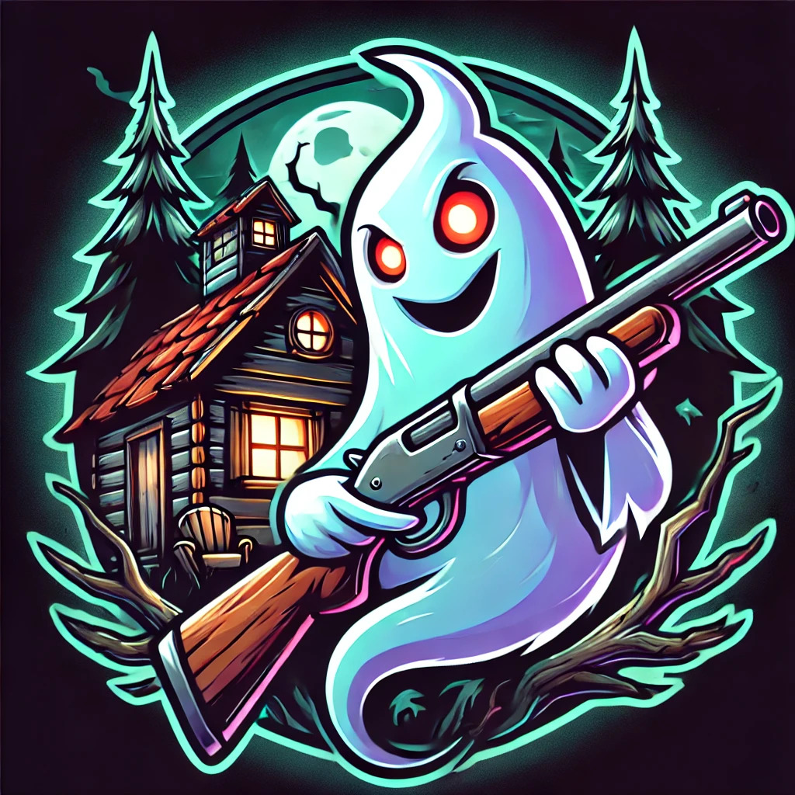
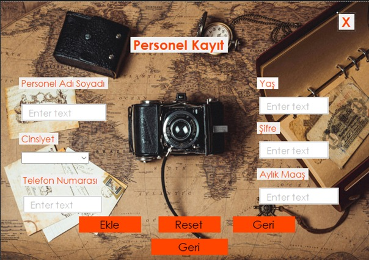
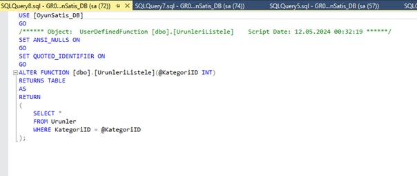

Soul Keeper
Unreal Engine
Blender
Hayalat avladığımız, kendimizi savunduğumuz tasarım ve geliştirmesi bana ait olan bir oyundur. Unreal Engine Blueprintleri ile geliştirilmiştir.

Espresso Köşesi
Html
Css
Javascript
Bir cafe nin özel istek üzerine yapılan web sitesidir. Freelance bir iştir. Html-Css ve javascript ile üretilmiştir.

Fotoğraf Makinesi Satış Otomasyonu
C#
MsSQL
Personal kaydının tutulduğu ve fotoğraf makinesi satış otomasyonu. Windows Form ve C# ile üretilmiştir.

Oyun Satış Takibi Database Tasarımı
MsSQL
Oyun üretiminin ve satışlarının çok seri yapıldığı bir şirket içi uygulamanın database tasarımı.
MsSql ile geliştirilmiştir.